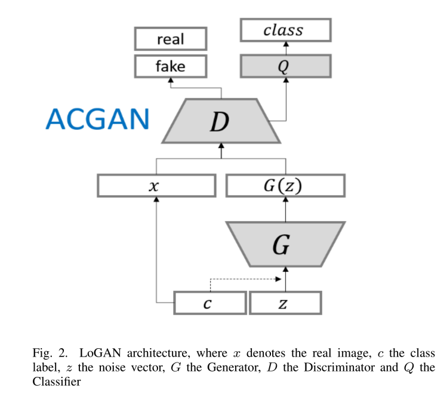
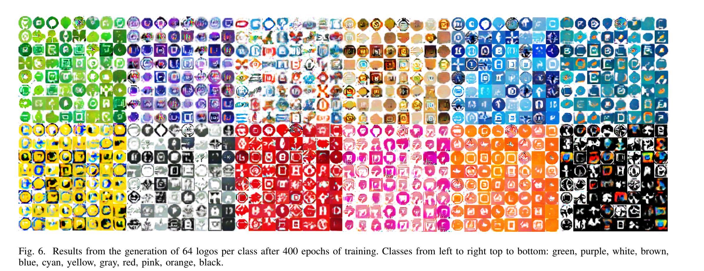

本文提出了LoGAN框架用于logo生成，基于AC-WGAN-GP结构。其condition 是12种不同的颜色，以颜色进行logo类别的标识。该篇论文代码已经开源，下载地址
总体上说来，论文思路很简单，但是有很强的业界价值。
LogoGAN框架图如下图所示：

- 该模型综合了
AC-GAN与WGAN-GP两部分的优势，又进行了部分改造：AC-GAN的D损失来源于两个部分：real-fake loss和class loss。WGAN-GP稳定了训练过程。LoGAN的D的损失只来自于real-fake loss。由增加的分类器Q进行class loss的判定。不过从图中结构来看Q的feature map也应该来自于D。
- 数据使用的是
LLD-icons dataset, 有486’377 32 *×* 32 icon。 使用
k-means算法找到每张图片上最主要的3种颜色，最主要的是组成color words。全部一共有12种主要的颜色：black, blue, brown, cyan, gray, green, orange, pink, purple,red, white, and yellow模型评估使用的是
Precision、Recall、F1。
实际效果展示：

综合评价：
以目前的方案来讲实用性不是很大，更多的是给予一种可能性。距离实际使用差距太大。
- 目前只考虑了logo的颜色，缺少太多定制化的要求，比如：特定图形、符号的融入。
- 分辨率过低，图像太过于模糊。